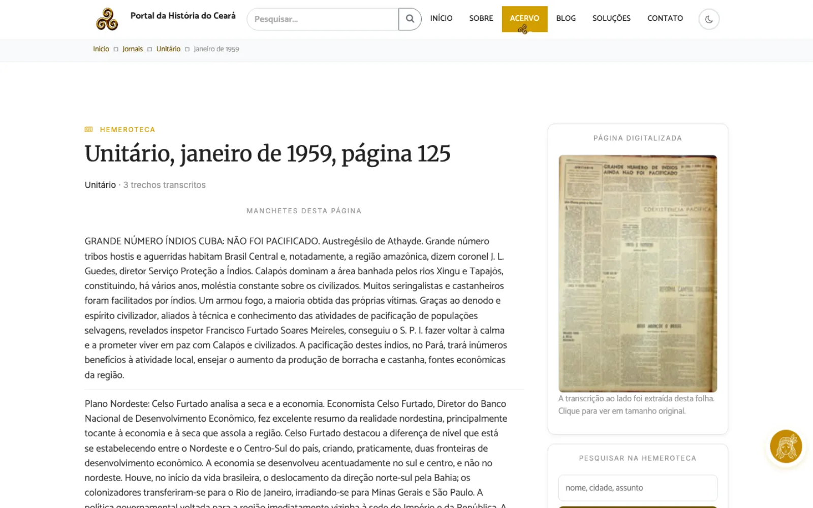
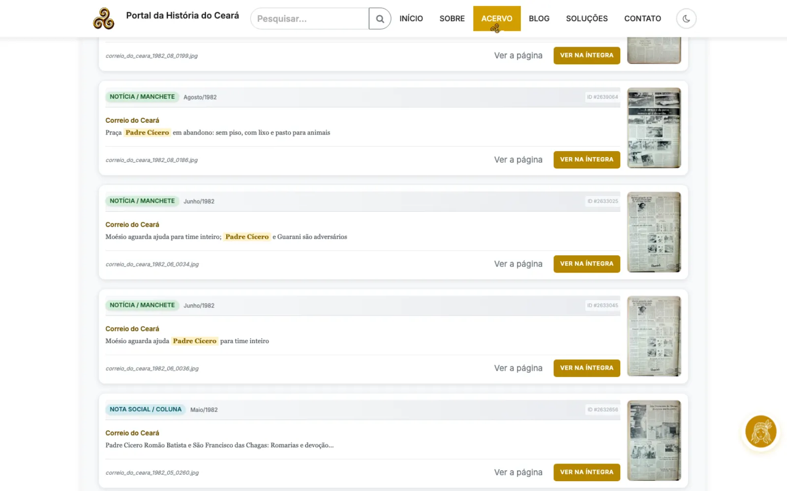

Neste artigo
Quando entrei no Portal da História do Ceará, o acervo já tinha mais de 30 anos de trabalho em cima. Jornais fotografados página por página, revistas escaneadas, fichas de catálogo montadas à mão pelo Prof. Gildácio Sá. O que não existia era um jeito de alguém achar alguma coisa ali dentro: era pasta, imagem, planilha e TXT. A pergunta era simples de falar e chata de resolver: como uma pessoa digita "farmácia" e chega na página certa de uma revista de 1890?

Hoje o portal tem busca full-text sobre 2,5 milhões de manchetes, de 250 mil edições de 133 jornais. Quase nada disso foi OCR. Foi limpeza, casamento de nomes e decisão sobre o que não gravar.
O que sai do OCR
OCR não entrega texto, entrega um palpite sobre o texto, e o palpite piora conforme o papel envelhece. Página do fim do século XIX tem tinta vazada do verso, coluna torta, mancha de umidade. O TXT sai com palavra partida no fim da linha ("consti-" numa, "tuição" na outra), cabeçalho repetido no meio do parágrafo e letra trocada por símbolo.
Antes do OCR ainda tem o lixo do próprio arquivo. Os TXTs vinham em encodings diferentes, uns em UTF-8 com BOM, outros em Windows-1252, gerados em máquinas e anos diferentes. A tabela artigo era latin1, herança do sistema antigo. A carga ficou assim:
$txt = file_get_contents($f);
$txt = preg_replace("/^\xEF\xBB\xBF/", "", $txt); // tira o BOM
if (!mb_check_encoding($txt, "UTF-8")) {
$txt = mb_convert_encoding($txt, "UTF-8", "Windows-1252");
}A coluna nova, texto_artigo, nasceu em utf8mb4 dentro da tabela latin1. Migrar a tabela inteira seria outro projeto; criar só a coluna resolvia o que importava.
Testei dois caminhos de extração. O clássico: OCR caractere por caractere e limpeza depois. O outro: mandar o PDF a um modelo multimodal (o Gemini 2.5 Flash) e pedir, por página, um JSON com texto, resumo curto e nota de confiança. O multimodal entende layout muito melhor, junta a palavra hifenizada e ignora a mancha. Em troca, às vezes "melhora" o texto por conta própria. Por isso o primeiro módulo com ele não gravava nada: mostrava o JSON na tela, alguém conferia, e só depois entrava no banco.

A desconfiança continua. O campo de manchetes mistura transcrição de OCR com resumo feito por máquina: ótimo pra busca, ruim pra citação literal. Regra da casa: nunca cite uma frase dali sem abrir a imagem da página.
Pharmacia, anno, thesoureiro
O problema que mais me pegou de surpresa foi de ortografia. Texto anterior à reforma de 1943 escreve "pharmacia", "anno", "thesoureiro", "commissão". O OCR, quando acerta, acerta isso. Só que o pesquisador digita "farmácia", e o full-text do MySQL compara palavra com palavra. A collation utf8mb4_unicode_ci resolve o acento, mas não transforma "ph" em "f".
A primeira versão do prompt mandava preservar a grafia original, porque parecia o certo do ponto de vista histórico. Mudei quando vi que a busca ficaria cega pra quase tudo antes de 1943. O campo que vai pro índice sai normalizado pro português atual (tira h e y mudos, troca ph por f, simplifica consoante dobrada, põe acento), e o PDF original continua lá pra quem quer a grafia de época. O hífen de quebra de linha não tem exceção: sempre une. Palavra partida em duas nunca é encontrada.
Quando o arquivo não tem o nome que o banco diz
Metade do trabalho foi descobrir que catálogo e arquivos não concordavam. O professor reclamou que não abria os PDFs da Revista do Instituto do Ceará, que tem números desde 1887. Cruzei o banco com a listagem real do bucket e os 3.723 artigos se dividiram assim:
- 49 casavam pelo nome exato (os de 1887 a 1889, sem prefixo);
- 3.347 casavam com o prefixo
RIC_que a carga tinha perdido; - 208 casavam com o prefixo, mas moravam na pasta de um tomo especial;
- 119 não casavam.
Os três primeiros grupos viraram uma migration de dados com guarda pra não aplicar duas vezes. Os 119 eram erro de digitação, tipo FundmanetosGeograficos no banco contra FundamentosGeograficos no arquivo. Pra eles escrevi um reconciliador por similaridade de nome dentro da mesma pasta: acima de 85% vira candidato, só aplica se o segundo colocado estiver pelo menos 3 pontos atrás (tem título como "Notas e Transcrições" que se repete no mesmo ano), abaixo de 70% nem sugere. O ambíguo foi pra um CSV de curadoria, porque quem decide é quem conhece o acervo.
Na revista da Academia Cearense de Letras a surpresa foi boa: muitos PDFs já tinham texto embutido. Numa amostra de 40, 34 devolveram texto com pdftotext, e no fim 2.458 dos 2.835 artigos ganharam texto pesquisável sem OCR nenhum. O detalhe que mais gosto desse script é um limite de 200 caracteres. Abaixo disso o PDF é imagem e o pdftotext devolve meio cabeçalho e quebra de linha. Gravar isso faria o artigo aparecer na busca por causa de ruído, então o script mede, relata e pula.
Uma busca que aguenta o tranco
Com o texto no lugar, a busca é um FULLTEXT do MySQL sobre as manchetes e outro sobre os artigos. Sem Elasticsearch, sem serviço extra: pro tamanho do acervo e do servidor, é suficiente e é uma peça a menos pra cair.
Um ajuste pequeno fez muita diferença. Quando a pessoa digita mais de uma palavra, a busca trata como frase exata em modo booleano. Quem procura "Padre Cícero" quer os dois nomes juntos, não toda manchete com um padre ou um Cícero. Palavra solta segue no modo natural, por relevância.

A busca também é a página mais cara do site, e isso apareceu do pior jeito: um raspador distribuído seguiu os links de manchete com um termo diferente a cada pedido, o cache não ajudou e os workers do PHP lotaram. Hoje são no máximo duas buscas no banco ao mesmo tempo, controladas por flock; sem vaga, a resposta é um 503 com Retry-After na hora, e busca em cache não precisa de vaga.
Se quiser ver o resultado, está em historiadoceara.com.br. Procura o nome da sua rua.

Full stack de Fortaleza. Ciência da Computação na UECE, cofundador e CTO do Leap Notes, tech lead do Portal da História do Ceará.